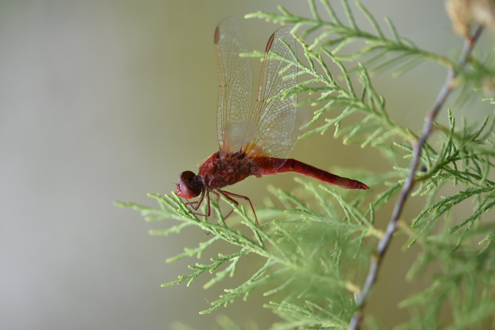
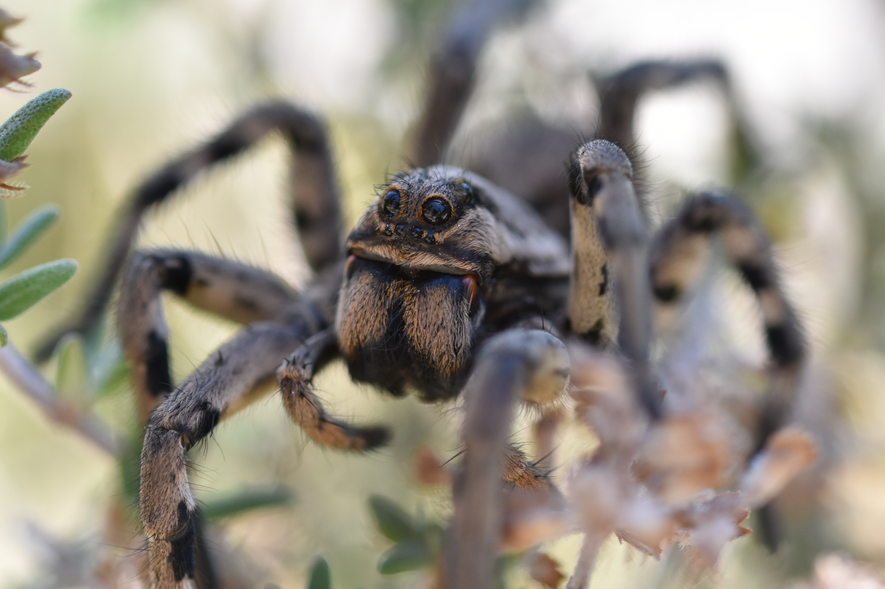
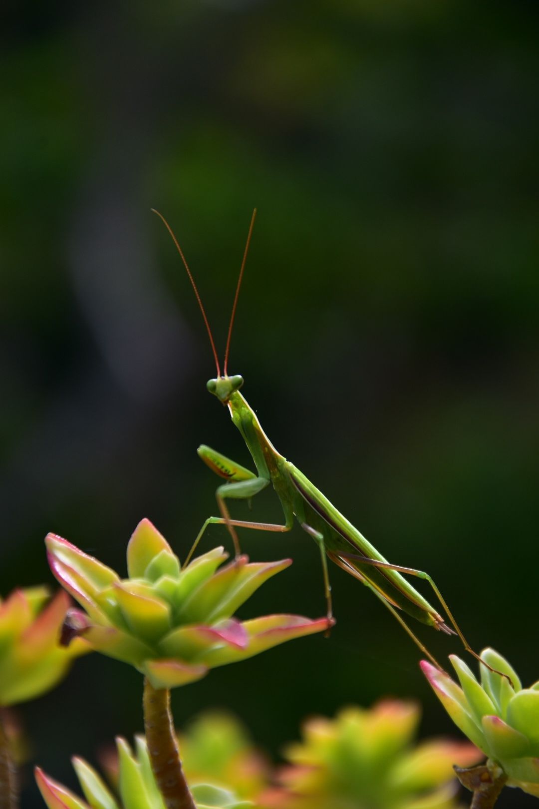
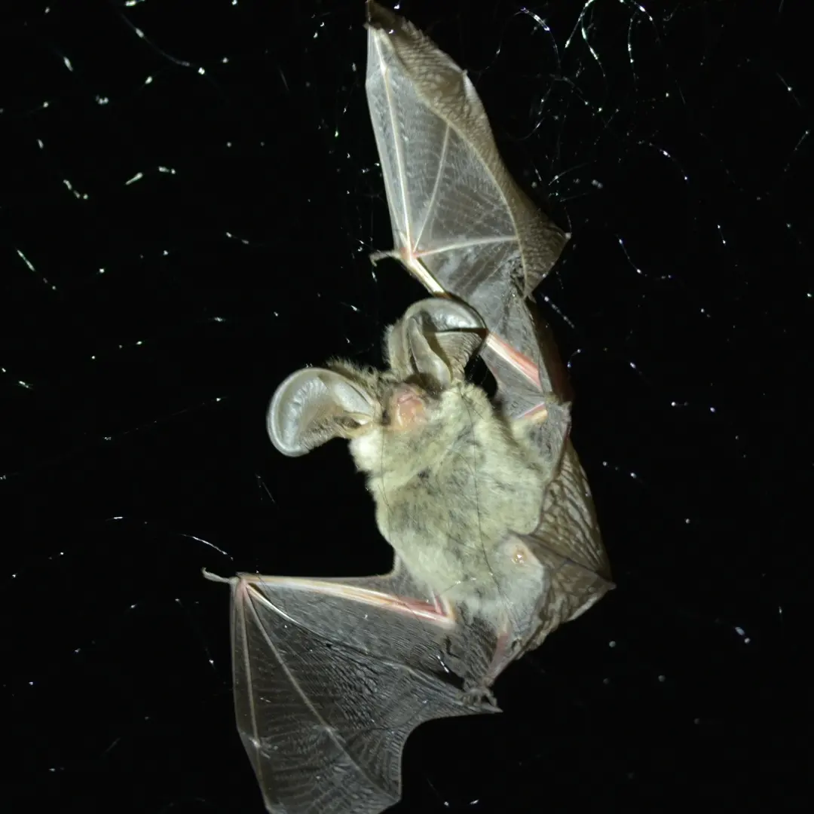

Galerie Photographique
Clichés de terrain, macrophotographie et observations naturalistes.

Crocothemis erythraea
Corbières — Mai 2026

Lycosa tarantula / Lycose de Narbonne
Corbières — Mai 2026

Mantis religiosa / Mante religieuse
Drôme — Juin 2023

Plecotus auritus / Oreillard roux
Cantal — Juillet 2022